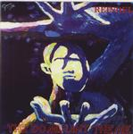

Home Artist links Label link

| Artist: | Reindel |
| Title: | The Dominant Theme |
| Label: | mp3.com |
| Length(s): | 54 minutes |
| Year(s) of release: | 1999 |
| Month of review: | 04/2000 |
Line up
Jim Reindel - guitars, bass, vocals, keyboards, percussion programming
Timothy Rindel - drums and percussion
Tracks
| 1) | Extinction Level Event | 4.11
|
| 2) | The Machine | 3.21
|
| 3) | The Experiment | 3.43
|
| 4) | Vanity & Ego | 3.48
|
| 5) | Ancient Mysteries | 3.53
|
| 6) | Panic In Sector Seven | 2.31
|
| 7) | Zebulon | 3.53
|
| 8) | Plight Of The Red Planet | 3.42
|
| 9) | Even Though... | 3.06
|
| 10) | Back In The Day | 3.23
|
| 11) | Dreams To Nightmares | 0.40
|
| 12) | Pressure | 2.17
|
| 13) | Feed The Fire | 2.50
|
| 14) | Samplescore | 1.00
|
| 15) | Timewarp Finale | 3.00
|
Summary
Somebody not affiliated to this band e-mailed me to say that there was rather
a strong thing going with this band in the Rush fanbase. I decided to look
it up and here they are. As you might have guessed from the titles, the
dominant theme is science fiction.
The music
Lots of shortish tracks on this one. The first of these is Extinction Level
Event, with 4.11 the longest track. After the driven intro the first vocal
part is a bit of a letdown, the vocals sound a bit flat and watery. The
chorus is better, because here also the driven tempo of the intro is used.
The vocals are a bit on the background here. Because the vocalist does not
have a extraordinary voice, this is a good idea. Also the musical gets a more
futuristic sound, which fits in well with the contents of the album. The dark
vocodings of the machine in The Machine dominate the next track. Then the
higher (but not Geddy high if you know what I mean) vocals of Tim Reindel set
in again. Good vocal melodies, but something still bothers me. I'm pretty
sure it is the production that sounds a bit as if the sound is cloaked.
The Experiment opens enthusiastically and is a bit more funky than the
previous tracks and is also nicely melodic with some powerful chords. Again
the composition has all it needs: to the point, a good basic melody. The
negative points are the vocals, that you might have to get used to. But then
again I had to get used to Geddy as well. Another problem I sometimes have
is that the production is not very clear and seems a bit unbalanced. However
to appreciate the music this is not essential. Vanity & Ego is for me the
first track in which the Rush influences are very apparent, especially in the
beginning. The guitar solo is not so typical, but the structure, the vocal
melody and the keyboards are. Fortunately, there is no plain copying, but only
an influence. Ancient Mysteries opens as you probably thought it would:
slow and mysterious. Then a plodding drum sets in. The music sounds positively
Arabic. The vocals are lower here and fit in with the epic music.
Panic In Sector Seven signifies a return to riff rock. Especially the middle
part of the track is quite nice here. In a way the music is quite playful,
a kind of panicky (yes) music to accompany a cartoon. Zebulon is the next
one. A repetitive guitar is dominated by keyboards here until we come to
a more flowing passage. The core of the track however is a driven, melodic
passage in which the vocoded vocals dominate. Plight Of The Red Planet
continues in a bombastic way after a piano intro. The bass solo and the
following guitar bring to mind a kind of menace. Even Though... is a track
I'm not that fond of. Besides the weird ploinks in the keyboards, this is more
of a straighforward rock track. Back In The Day continues the spell of rock
with an instrumental. Dreams To Nightmares is more like a horror soundtrackish
thing. Pressure hails the return of the not so melodic vocals. It seems that
after Plight Of The Red Planet the music turned less melodic and as a
consequence less interesting for me. Feed The Fire compensates by a more
melodic chorus. The guitar dominates much more on the latter part of this
album and the guitar solo on Feed The Fire is a bit too meandering and lacks
in melody. An unrestful track with double vocals. The backing vocals weirdly
enough remind me of Doctor Tar And Professor Fether by the Alan Parsons
Project. Samplescore brings back the melody during its one minute length, in
both restful and bombastic way. The Timewarp Finale ends the track, opening
with the bassdrums and turns into an up-tempo instrumental conclusion.
The productional problems on this album are probably the result of a small
recording budget. This is why I don't mind it much, as long as the music is
good. Still, it has be taken into account by any future listener.
A few typos in the booklet: Dream Theatre (should be Theater) and M. Shenker
(I guess Michael Schenker is meant). Although Reindel pays his respects to
many artists in the booklet and his love of Rush seems quite strong, I consider
this album to be original enough to stand on its own. Still, I always like
bands to put down these names, because they do have a tendency to indicate
the style of the music.
Conclusion
Nothing wrong with the first part of this album. Great melodies, good songs,
but I'm sorry to say the songs past halfway are generally less interesting,
because more rock and less prog. Overall the sound of the album sounds a bit
unbalanced, the drums a bit too loud and the vocals should also be considered
more carefully. Reindel does not have a great voice, but he uses it rather
sparingly and somewhat in the background. I prefer it when he tries not to
sing to high like in Ancient Mysteries. If you like Rush or Crack The Sky or
are just interested in well written tuneful proggy compositions with
alternately guitar and keyboards at the fore, than there's no reason not to
visit mp3.com for a listen (or try my shorter samples).
© Jurriaan Hage